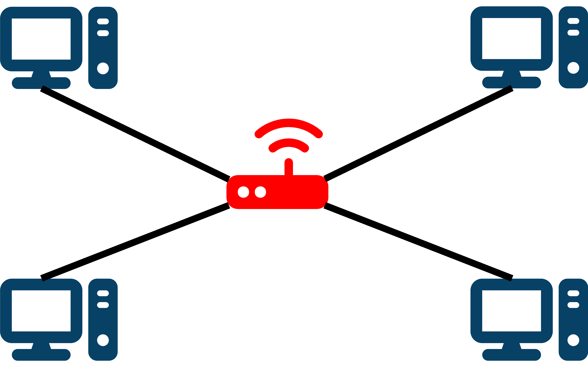

The topology of a network refers to the how the devices on that network are arranged.
The topology of a network refers to the how the devices on that network are arranged.
The most common network topologies in use today are the bus and star topologies.
Diagram 1 shows a bus topology.
 Diagram 1
Diagram 1

The backbone cable is called the "bus" (highlighted in red on the diagram). All the data that is sent across the network travels along the bus. Only one device can communicate at a time in order to avoid collisions. The terminators at either end stop signals reflecting and causing interference.
Diagram 2 shows a star topology.
 Diagram 2
Diagram 2

Each device is connected to a central switch or hub (highlighted in red on the diagram). Each device has to be individually connected to the switch, so the failure of one device will not affect the rest of the network. Because of the switch, each device can exchange data with every other device without collisions.
Note that while bus topology networks need to be wired, star topology networks can be either wired or wireless.
 What are the advantages and disadvantages of using a star topology instead of a bus topology?
What are the advantages and disadvantages of using a star topology instead of a bus topology?
Tap/click to reveal
Advantages:
• There are less data collisions on star topology networks than on bus topology networks
• Data transmission is usually quicker on star topology networks
• Star topology networks are more secure because the data is only sent to its intended recipient
• It is easier to add new devices to a star topology network
Disadvantages:
• Star topology networks use more cable than bus topology networks
• The whole network fails if the central switch fails (single point of failure)
• Star topologies can be harder and more expensive to install than bus topologies